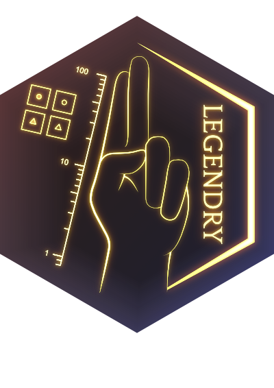
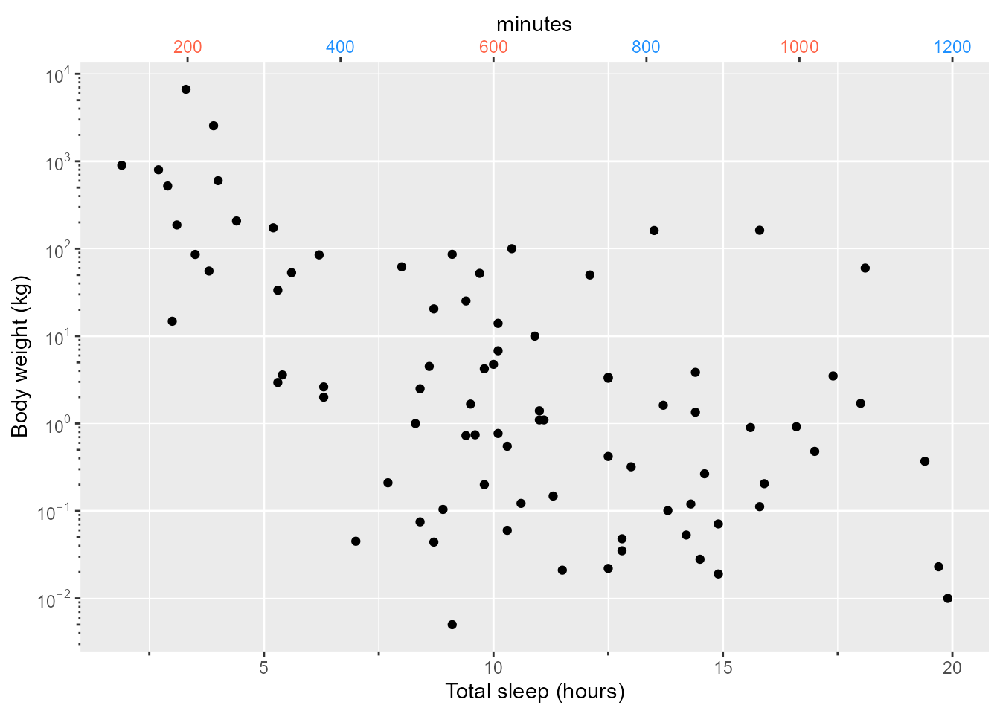
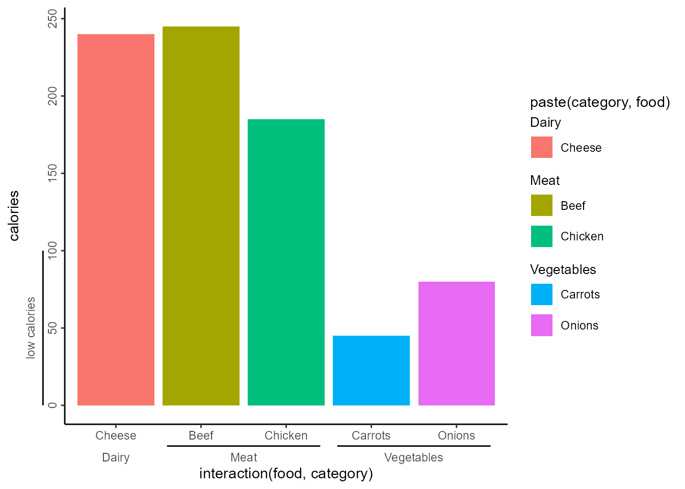
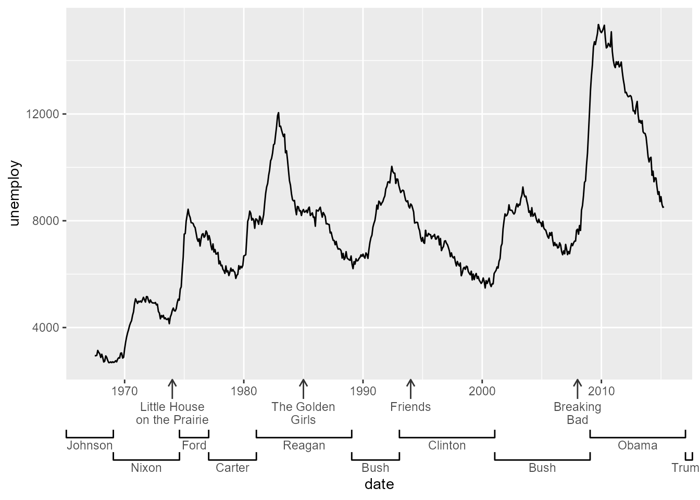

install.packages("legendry")
I’m glad to announce that the legendry package has landed on CRAN! It is a ggplot2 extension package, focussed on expanding the guide options. If you’re looking to try out legendry yourself, you can install it with:
I like plot annotations. Guides are among the most important plot annotations, as they instruct an observer on how a graphic should be interpreted. They are essential in getting the data to divulge their story.
I’ve always found it hard to place annotations outside the panels of a plot and usually resorted to post-editing the figures in vector graphics software such as Adobe Illustrator to nicely place these. However, as people might be aware, it can take several iterations to get from the first serious figure to the final figure you use in your communication. This makes editing the figures every time very cumbersome. In addition, it is not reproducible, so we should aim to incorporate some flexibility in annotating our figures. This package is my attempt at that.
Growing this package
The seed that sprouted this package germinated in April 2020. Hey, it was at a time when we all were looking into alternate hobbies when the lockdowns started! In any case, the idea started as guide_axis_nested() in ggh4x, which was ultimately reincarnated as: … guide_axis_nested().
However, I took some convincing to take the guide related functionality in ggh4x and make an offshoot package. (Like any self-respecting amateur developer, I had no idea what the scope of ggh4x should be). The first graft of this offshoot was called ‘gguidance’, traditionally using the ‘gg’-prefix before ggplot2 extension packages, and it was about guides 🤷️.Nobody, including myself knew how to pronounce this name, so that is how ‘legendry’ was born.
At the time, the issue was that the guide system, as one of the last vestiges in ggplot2, was still written in the S3 object oriented programming style. This lacked the great extensibility of other ggplot2 systems, like stats, geoms or facets that all uses the rather specialised —but highly flexible— ggproto system. As such, the guide system was explicitly advertised as not an extension point.
It took a bit of path clearing to build legendry. To cut a long story significantly shorter: I volunteered for the rewrite, got offered a job maintaining ggplot2, and midwifed the 3.5.0 release of ggplot2 which formally makes guides an extension point.
Concepts in legendry
The package has website including vignettes to talk you through most of its functionality. As such, I’ll try to convey the big picture ideas here and leave the details up for you to peruse at your leisure.
Scale interaction
Perhaps the most gentle introduction is legendry is that you now have the power to intervene in what scales pass on to guides. Most guides in legendry accept a key argument, that you can customise to some degree. You can read more in the vignette, but here are three examples using axes.
library(legendry)
#> Loading required package: ggplot2
ggplot(msleep, aes(sleep_total, bodywt)) +
geom_point(na.rm = TRUE) +
scale_y_log10() +
guides(
# A regular key, but add minor ticks
x = guide_axis_base(key = "minor", title = "Total sleep (hours)"),
# A log key
y = guide_axis_base(key = "log", title = "Body weight (kg)"),
# A manual key
x.sec = guide_axis_base(
key = key_manual(
c(200, 400, 600, 800, 1000, 1200) / 60,
label = c(200, 400, 600, 800, 1000, 1200),
colour = rep(c("tomato", "dodgerblue"), length.out = 6)
),
title = "minutes"
)
)
Complete guides
The package has a few ‘complete’ guides that are drop-in replacements for ggplot2’s guides. Sometimes, these attempt to literally mirror ggplot2’s guides, give or take a few tweaks, like guide_axis_base() or guide_legend_base(). Other times, these convey novel relations between items, like guide_axis_nested() useful for indicating ranges, or guide_legend_groups() for indicating groups.
food <- data.frame(
category = c("Meat", "Meat", "Vegetables", "Vegetables", "Dairy"),
food = c("Beef", "Chicken", "Carrots", "Onions", "Cheese"),
gram = c(85, 85, 150, 210, 225),
calories = c(245, 185, 45, 80, 240)
)
ggplot(food, aes(interaction(food, category), calories)) +
geom_col(aes(fill = paste(category, food))) +
guides(
# Using a nested axis to visualise ranges innate to the data
x = "axis_nested",
# Split up legend into groups
fill = "legend_group",
# Custimising nested axis to display ranges
y = guide_axis_nested(
key_range_manual(0, 100, "low calories"),
# Local theme to rotate y-axis text for only this guide
theme = theme(axis.text.y.left = element_text(angle = 90, hjust = 0.5))
)
) +
# Global theme
theme_classic()
See the accompanying vignette for more details. You might wonder: “the existence of the term ‘complete guides’ implies the existence of ‘incomplete guides’”. You’d be right. In legendry, these are called ‘primitives’, like primitive_bracket(), for aesthetic-agnostic building blocks and ‘gizmos’, as in gizmo_histogram(), for speciality displays.
Composed guides
The last idea is that we should be able to assemble complicated guides from simpler parts. There are ways to make regular guides, like guide_axis_base(), or even simpler guides, like primitive_bracket() and combine these to build rich annotations. The way guides are combined is using compose_*() functions. For example compose_ontop() will overlay two guides, whereas compose_stack() will draw the second guide after the first guide. Moreover, you can have compositions inside compositions, so there is some room for creativity here. It is somewhat of a tougher task to get right, so I’ve tried to elaborate some more in the vignette. At any rate, here is an example of how guide composition can work.
air_dates <- data.frame(
year = as.Date(c("1974-01-01", "1985-01-01", "1994-01-01", "2008-01-01")),
title = c("Little House\non the Prairie", "The Golden\nGirls",
"Friends", "Breaking\nBad")
)
# Let's say we want to display when the shows started with arrows
tv_show_guide <- guide_axis_base(
key = key_map(air_dates, aesthetic = year, label = title),
# Local theme for long arrows as ticks
theme = theme(
axis.ticks.length = unit(14, "pt"),
axis.ticks = element_line(arrow = arrow(length = unit(2, "mm")))
)
)
# We'd like to place these arrows ontop of a regular guide
ontop <- compose_ontop("axis_base", tv_show_guide)
# In addition, we might want to annotate the ruling president at the time
president_guide <- primitive_bracket(
key = key_range_map(presidential, start = start, end = end, name = name),
bracket = "square"
)
ggplot(economics, aes(date, unemploy)) +
geom_line() +
guides(x = compose_stack(ontop, president_guide))
Future
The package is now in a usable state, which is reflected in its release to CRAN. My hope is that together with people in the ggplot2 community, we can expand the set of guides even further! Should you find any bugs or have good ideas, the issue tracker on GitHub is the place where I track these.
I’m looking forward to seeing some legendary plots out in the wilds!